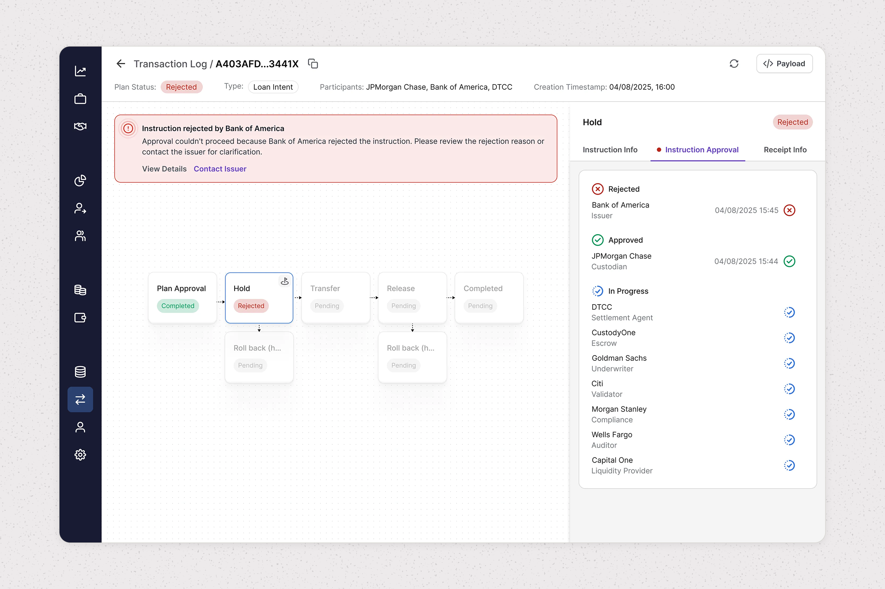
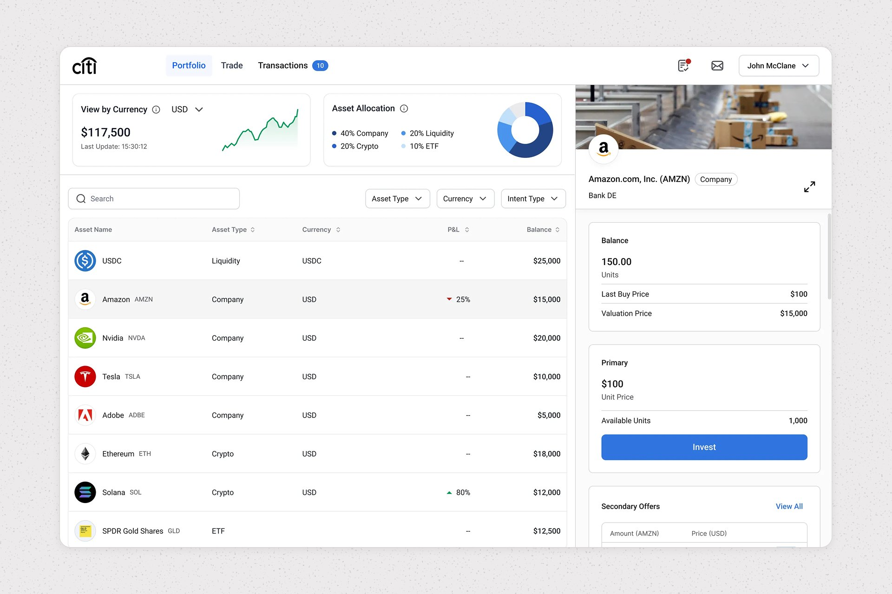
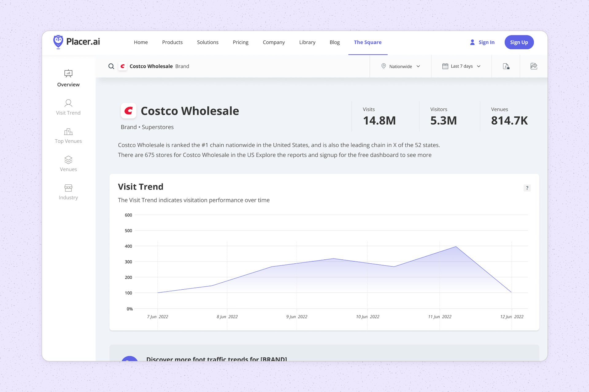
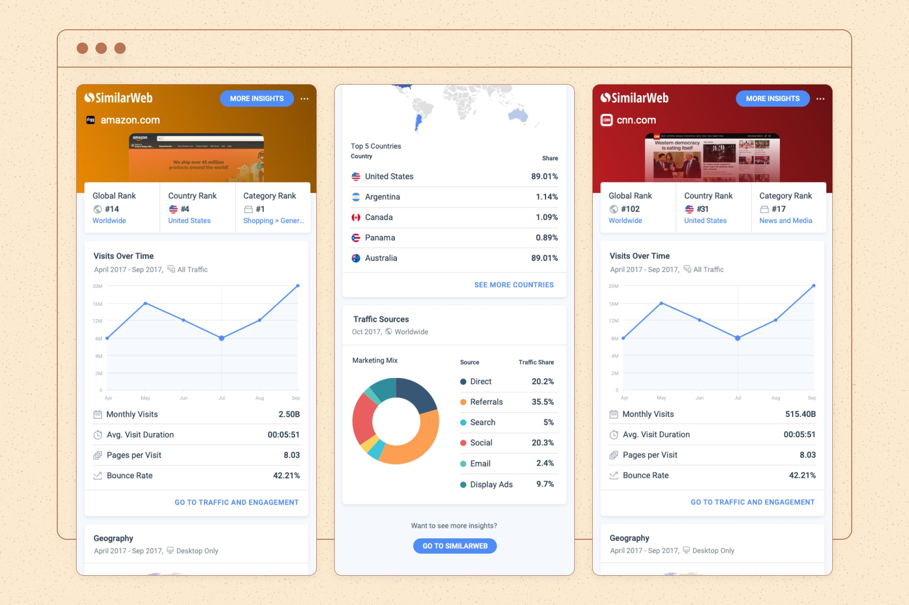
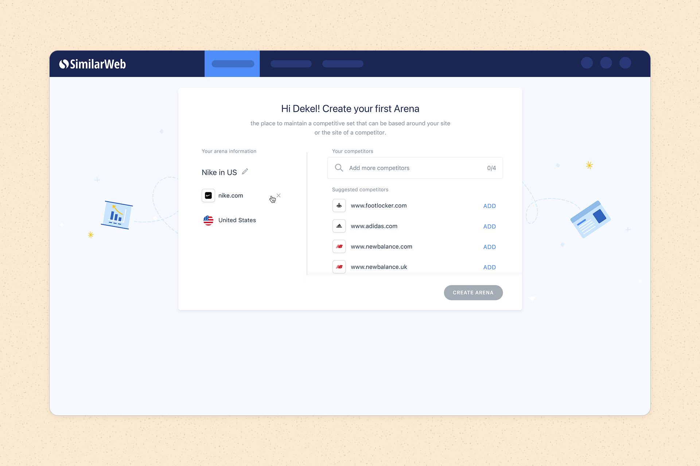

Work
Ownera
2023 → 2026
Ownera is Fintech infrastructure for trading tokenized assets between financial institutions, backed by J.P. Morgan.

Designing for Investors Who Expect More
Beyond the two case studies: 40+ shipped features across the Admin and Investor platforms, on a design system I built from scratch.
Placer.ai
2021 → 2022
Placer.ai is a location intelligence unicorn: foot-traffic analytics for retail, real estate, and finance.

Notable projects: Lite Platform • Design System & React Transformation • Marketplace • Embedded Widgets
SimilarWeb
2018 → 2020
SimilarWeb is a digital intelligence platform that helps businesses understand market trends and competitive landscapes.


Notable projects: SimilarWeb Extension Redesign • Registration Funnel & Onboarding • Cross-Platform B2C Products